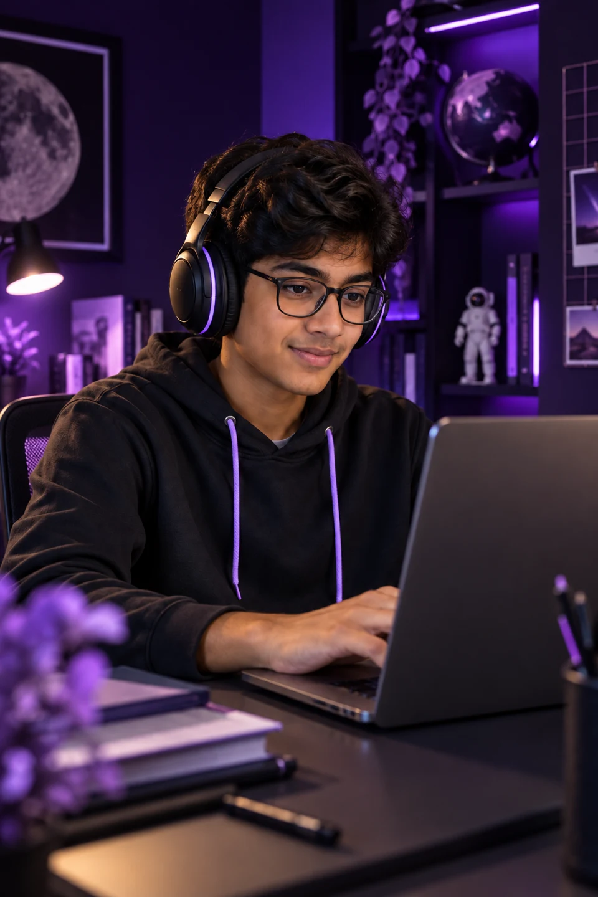

Face. Eyes. Posture.
Facial expressions, eye movement, head movement aur body posture.
SCIENTIFIC UNDERSTANDING STARTS WITH BETTER EVIDENCE
Isi understanding ke liye bana hai Into3 ka RTAE. Real-time data ko learning evidence ke saath dekhne ka approach.
₹100 reservation offer · 1 month included
Then ₹1,399/month for six paid months, plus ₹100 bill credit.
Illustrative sensing visualization, not a live scan. Rays are a visual metaphor; available signals depend on supported devices and consent.
WHAT RTAE LOOKS AT
RTAE ka 47-parameter design real-time observations ko answers, mistakes aur feedback ke saath analyse karne ke liye banaya gaya hai.

BEYOND A SINGLE ANSWERFacial expressions, eye movement, head movement aur body posture.
Voice cues, answers, mistakes, hesitation aur help requests se milne wala context.
Heart rate, blood pressure, SpO₂, temperature aur stress indicators, where supported and validated.
Camera signals, physiological estimates and device measurements are different sources. Not every signal is available from a laptop camera. Capture requires consent and supported, validated integrations; these are not medical diagnoses.
EXPLORE THE RESPONSE
Select a moment to see how evidence can inform the next step.
Illustrative examples, not live student measurements.
The same mistake appears again, and the student asks for help.
Responses and available session signals prompt a check-in: which part felt unclear?
RTAE recommends a simpler explanation. The personal planner approves; the learning module delivers it.
A fresh question helps check whether the concept is clearer.
Attention, mood and intent are contextual estimates, not facts read from a face. Student feedback and learning history matter; a single signal does not prove understanding.
“Scientific understanding” describes an evidence-led design, not a guarantee of reading thoughts, feelings or learning with certainty. Complete 47-parameter coverage and learning effectiveness require validation.
ONE LEARNER. A CONNECTED SUPPORT SYSTEM.
The Individual Learning Planner coordinates what, when and how much to study. Specialist modules deliver the learning, and each result informs the next step.
 AN EXPLANATION THAT CAN CHANGE
AN EXPLANATION THAT CAN CHANGEDifferent examples, language, style and depth. Approved changes can reshape a lesson during the session.
Target learning gaps and work through the point of difficulty. Results feed back into the learning plan.
“A fraction is part of a whole.”
“Would half of two different-sized pizzas be equal?”
Illustrative exchangeQuick revision clips, or Teach Me Something: the student teaches the AI, whose questions help surface gaps.
Scheduled assessments and schoolwork inform the next steps in the independent learning journey.
 EXPLORE IT. TRY IT. UNDERSTAND IT.
EXPLORE IT. TRY IT. UNDERSTAND IT.Web-based and VR activities connect concepts with practical subject and chapter tasks.

 SMALL STEPS. VISIBLE PROGRESS.
SMALL STEPS. VISIBLE PROGRESS.Focus, memory and stress-buster activities, with animal identities and milestones that make progress tangible.
For your child: a clearer next step. For you: a journey centred on understanding, not just completed chapters.
THE FIRST CHAPTER BELONGS TO OUR FOUNDING FAMILIES
Phase 1 opens to 5,000 students. Explore the founding-family offer now and give your child a place in Into3’s first chapter when reservations open.
This is advance booking for future access. Your child cannot start using the product immediately.
Starts when your child’s access is activated.
₹100 off each of your first six paid months.
Your reservation payment reduces the first paid bill.
Reserve for ₹100 once checkout opens. Explore the introductory month together, then choose whether to continue.
Founding-family extras: the included month, six discounted paid months and your reservation credit. These are the benefits included in this offer.
Read the full offer details ↗₹100to reserve
Pre-launch only. Paid reservations are not open yet. Exact activation dates and final reservation terms will be shown before checkout.
₹1,399/month instead of ₹1,499 for six paid months.A FEW THINGS YOU MIGHT BE WONDERING
The planned MetaLab experience includes web-based activities as well as VR experiences. A VR headset is not required for the ordinary web learning journey. The launch activity catalogue will specify device requirements.
It begins when your child’s access is activated, not when you reserve. The planned launch window is December 2026–January 2027. Access is not immediate; exact activation dates and included launch features will be confirmed before paid reservations open.
The offer is ₹1,399 per paid month for the first six paid months after the introductory month. The ₹100 reservation credit reduces the first paid bill to ₹1,299. The planned price thereafter is ₹1,499/month. Billing, tax treatment and cancellation terms will be displayed before checkout.
This is a pre-launch offer for Phase 1, limited to 5,000 students, with launch planned for December 2026–January 2027. Paid reservations are not open yet. We are preparing the payment gateway and final activation, cancellation and refund terms. No payment is collected here until those details are available.
No learning-outcome guarantee is being made. The approach uses learning evidence to inform decisions, while student effectiveness validation remains ahead. Engagement estimates are contextual signals, not medical diagnoses or a substitute for a child’s own feedback.
LET’S TALK ABOUT YOUR CHILD’S LEARNING
Want to understand Into3, the founding offer or what comes next? Reach out to our team.
Choose the way that works for you.
Contact usWhatsApp contact is being confirmed. Email us in the meantime.
info@into3.aiFor refunds and billing: refund@into3.ai